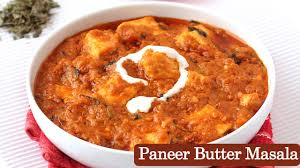

Hello! My name is Harshid Trivedi. I am a food lover who enjoys trying different vegetarian dishes and exploring new restaurants.
My favorite cuisine is Punjabi cuisine. One of my best meals was a family dinner where I enjoyed Paneer Butter Masala, Butter Naan, and Gulab Jamun.

Click on the image to learn more about Paneer Butter Masala.
| App Name | Delivery Charges | Rating |
|---|---|---|
| Zomato | ₹30 | 4.5 |
| Swiggy | ₹25 | 4.4 |
| Uber Eats | ₹35 | 4.3 |